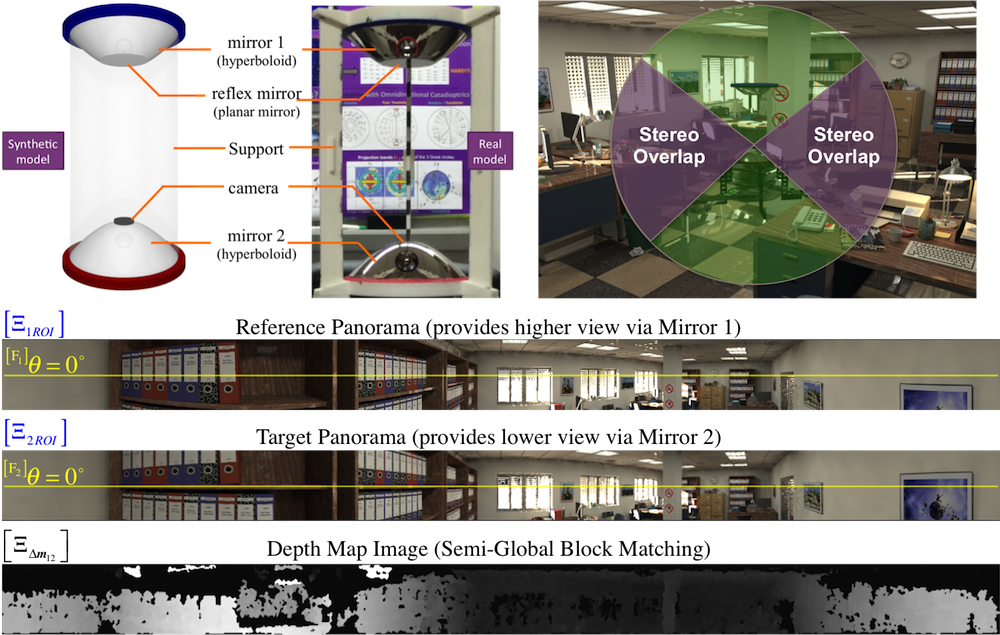

Design and Analysis of a Single-Camera Omnistereo Sensor for Quadrotor Micro Aerial Vehicles (MAVs)
Abstract
We describe the design and 3D sensing performance of an omnidirectional stereo (omnistereo) vision system applied to Micro Aerial Vehicles (MAVs). The proposed omnistereo sensor employs a monocular camera that is co-axially aligned with a pair of hyperboloidal mirrors (a vertically-folded catadioptric configuration). We show that this arrangement provides a compact solution for omnidirectional 3D perception while mounted on top of propeller-based MAVs (not capable of large payloads). The theoretical single viewpoint (SVP) constraint helps us derive analytical solutions for the sensor’s projective geometry and generate SVP-compliant panoramic images to compute 3D information from stereo correspondences (in a truly synchronous fashion). We perform an extensive analysis on various system characteristics such as its size, catadioptric spatial resolution, field-of-view. In addition, we pose a probabilistic model for the uncertainty estimation of 3D information from triangulation of back-projected rays. We validate the projection error of the design using both synthetic and real-life images against ground-truth data. Qualitatively, we show 3D point clouds (dense and sparse) resulting out of a single image captured from a real-life experiment. We expect the reproducibility of our sensor as its model parameters can be optimized to satisfy other catadioptric-based omnistereo vision under different circumstances.

Carlos Jaramillo
Senior Robotics Engineer
My research interests include mobile robotics, computer vision and machine learning.